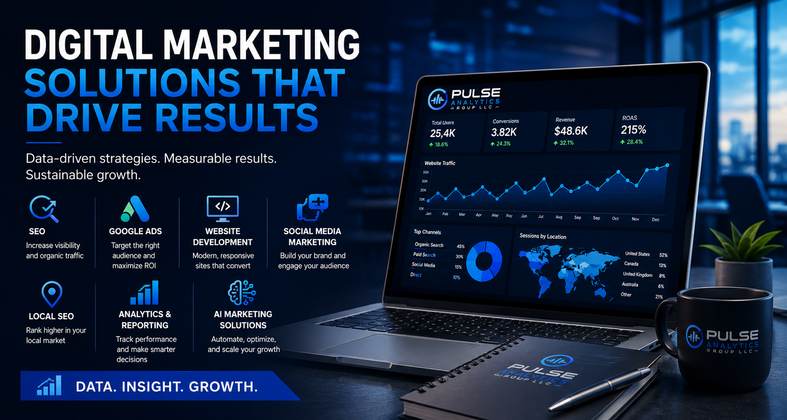

Build
Establish a strong digital foundation through websites, branding, accessibility, and customer-focused experiences.
Strategic Digital Marketing & Growth Solutions
Digital growth requires more than a collection of disconnected tactics. Pulse Analytics Group combines website development, search engine optimization, local search, paid advertising, analytics, social media, artificial intelligence, and brand strategy into coordinated solutions designed around your business objectives.

Each service below addresses a different part of the digital growth process. Some businesses need a stronger foundation, others need greater visibility, better measurement, more qualified leads, or a stronger brand. Pulse Analytics evaluates the business need first and then applies the services that can create the greatest strategic value.
Search engine optimization (SEO) is the process of improving a website and its surrounding digital presence so search engines can better understand, evaluate, and rank the business for relevant searches. Effective SEO is not simply about adding keywords to a page. It involves technical website health, content quality, search intent, site structure, authority, user experience, and ongoing performance analysis.
SEO is used to place a business in front of potential customers while they are actively researching a product, service, problem, or local provider. Unlike advertising, which stops generating paid visibility when the campaign ends, a well-developed organic search presence can continue producing qualified traffic over time. That makes SEO an important part of building a durable digital foundation.
Pulse Analytics approaches SEO as an ongoing growth system. We evaluate technical performance, research relevant search opportunities, optimize important pages, improve content, strengthen internal structure, and monitor measurable changes in visibility and traffic. The objective is not simply higher rankings—it is attracting the right visitors and creating opportunities for meaningful business results.
Local SEO focuses on improving a business's visibility when customers search for products and services within a specific geographic area. For businesses that depend on nearby customers, appearing prominently in local search results can be one of the most valuable sources of qualified traffic. Local visibility extends beyond a website and includes the business's broader search presence and location-specific signals.
Local SEO is commonly used by service businesses, restaurants, retailers, contractors, professional practices, and other organizations that serve defined communities or geographic markets. Strong local optimization helps potential customers discover the business, understand what it offers, evaluate its credibility, and take the next step—whether that means calling, requesting directions, visiting a website, or making an inquiry.
Pulse Analytics helps businesses establish a stronger local digital presence through location-focused optimization, website improvements, search visibility analysis, and strategic content. We connect local search strategy to the broader marketing system so local visibility supports lead generation, customer acquisition, and long-term growth.
Google Ads is a paid advertising platform that allows businesses to reach potential customers across Google's advertising ecosystem. Search advertising is particularly valuable because it can place a business in front of people actively searching for products or services. Other campaign types can support awareness, remarketing, product promotion, and broader customer acquisition objectives.
Effective paid advertising requires much more than launching an advertisement and setting a budget. Campaign structure, keyword strategy, targeting, messaging, landing pages, conversion tracking, bidding, budget allocation, and ongoing optimization all influence performance. Without reliable measurement, businesses can spend money without knowing which activities are actually producing valuable outcomes.
Pulse Analytics develops and manages Google Ads strategies around defined business objectives. We use research, conversion measurement, campaign analysis, and ongoing optimization to help businesses make better use of their advertising budgets. The focus is on measurable performance and alignment between advertising, the website, and the broader marketing strategy.
A business website is more than an online brochure. It is often the central destination for search traffic, advertising traffic, social media visitors, referrals, and customers researching whether they should do business with you. A strong website must communicate credibility, make information easy to find, perform well across devices, and guide visitors toward meaningful actions.
Pulse Analytics develops modern, responsive websites with business objectives in mind. Development can include custom websites as well as work within platforms such as WordPress, Shopify, and Wix. We consider usability, accessibility, performance, search readiness, navigation, content structure, and conversion opportunities so the website can function as an active component of the overall marketing system.
Whether a business needs a new website, a redesign, an e-commerce experience, or ongoing maintenance, our approach focuses on creating a digital foundation that can support marketing today and scale with the organization over time.
Marketing analytics provides the measurement layer that shows what is happening across a digital presence. Website traffic, user behavior, advertising performance, conversions, lead activity, and other key performance indicators can reveal where marketing is producing value and where improvements are needed. Without measurement, strategic decisions are often based on assumptions rather than evidence.
Analytics is used to connect marketing activity with business outcomes. Rather than looking only at traffic or engagement, businesses can evaluate the actions that matter to them—such as leads, purchases, calls, form submissions, or other conversions. Reporting systems then organize that information so decision-makers can understand performance without sorting through disconnected data sources.
Pulse Analytics implements measurement and reporting systems designed around the metrics that matter to each business. This can include Google Analytics 4, conversion tracking, custom dashboards, KPI reporting, and performance analysis. We turn complex marketing data into useful information that can guide strategy, budget decisions, and continuous optimization.
Artificial intelligence is increasingly being used to support marketing, customer communication, research, content workflows, automation, analysis, and business operations. The value of AI comes from applying it to specific problems where automation, pattern recognition, assistance, or faster information processing can improve the way a business operates.
AI marketing can be used to automate repetitive workflows, assist with content development, support customer interactions, qualify leads, organize information, and surface useful insights. The goal should not be to use AI simply because it is available. It should be implemented where it creates measurable efficiency, improves the customer experience, or gives a business better capabilities.
Pulse Analytics helps businesses identify practical opportunities for AI and automation within their existing marketing systems. We can help evaluate workflows, design automation strategies, integrate AI-assisted tools, and connect those capabilities to broader marketing processes. Our approach keeps human judgment and business objectives at the center while using technology to handle repetitive work and improve efficiency.
Brand strategy defines how a business presents itself to the market and how customers should understand, remember, and experience that business. A strong brand is more than a logo or color palette. It brings together positioning, messaging, visual identity, customer perception, and the consistent expression of the organization's value across its marketing channels.
Businesses use brand strategy to establish a clear market position, differentiate themselves from competitors, create consistency across digital channels, and communicate their value more effectively. When a website, social media presence, advertising, content, and customer experience all communicate the same core identity, the business becomes easier for customers to recognize and understand.
Pulse Analytics helps businesses develop practical brand strategies that support their marketing objectives. We can evaluate how the business is currently positioned, identify opportunities for greater consistency, clarify messaging, and translate the brand strategy into digital experiences across websites, social platforms, advertising, and other customer touchpoints. The result is a stronger foundation for building recognition, credibility, and long-term customer relationships.
A website can provide the foundation, SEO can increase organic visibility, Local SEO can strengthen geographic reach, Google Ads can create immediate opportunities, social media can build relationships, analytics can measure performance, AI can improve efficiency, and brand strategy can create consistency across the entire experience. Each service has a distinct role, but the strongest marketing systems connect those roles into one coordinated strategy.
Establish a strong digital foundation through websites, branding, accessibility, and customer-focused experiences.
Increase visibility through SEO, Local SEO, paid advertising, content, and social media.
Connect marketing activity to meaningful performance metrics through analytics, conversion tracking, and reporting.
Continuously improve campaigns, experiences, workflows, and strategies using real performance information.
Whether you need a stronger website, greater search visibility, better advertising performance, clearer reporting, stronger social media, practical AI solutions, or a more cohesive brand, Pulse Analytics can help identify the opportunities that matter most.
Every successful engagement begins with understanding the business, its customers, its market, and its goals. From there, we can determine which services should work together to create the strongest path toward measurable growth.